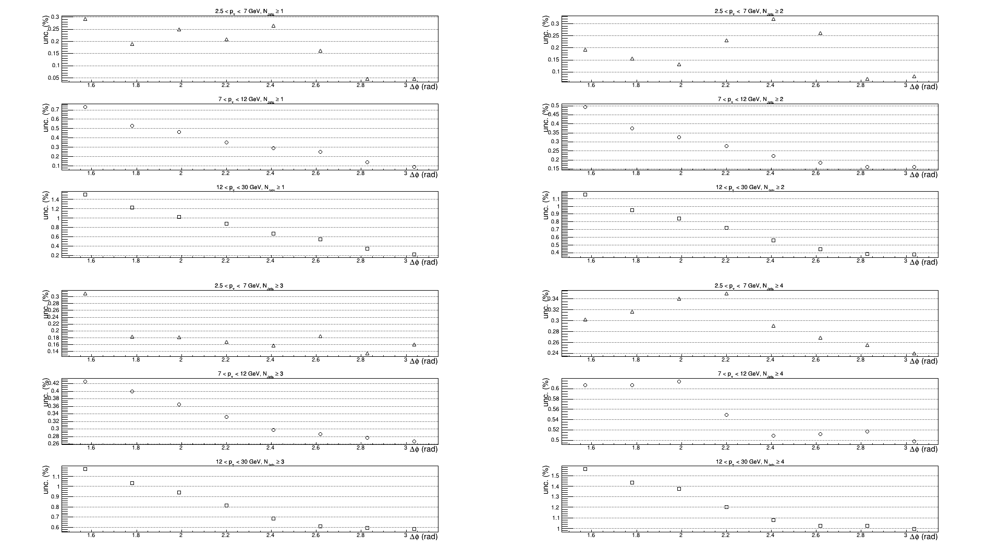
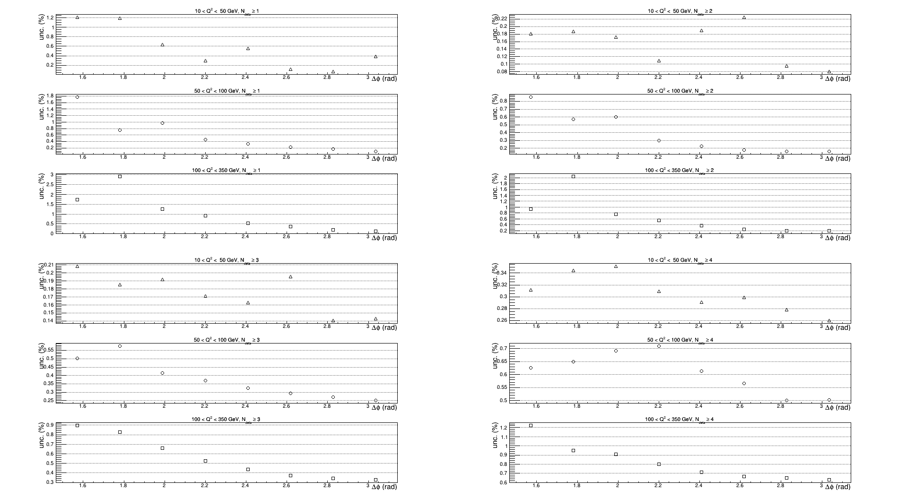

Measurement of the azimuthal decorrelation angle
between the leading jet and scattered lepton
in deep inelastic scattering at HERA
Systematic uncertainties for PT binning

For migration, covariance and correlation matrices for differet regions see:
Systematic uncertainties for Q2 binning

For migration, covariance and correlation matrices for differet regions see: